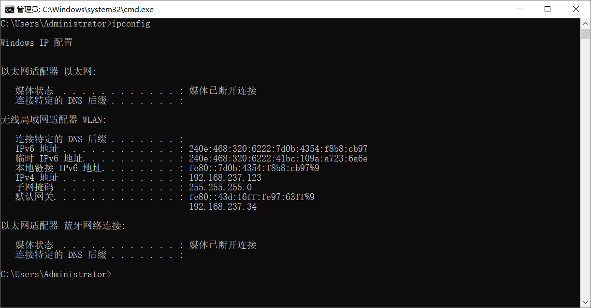
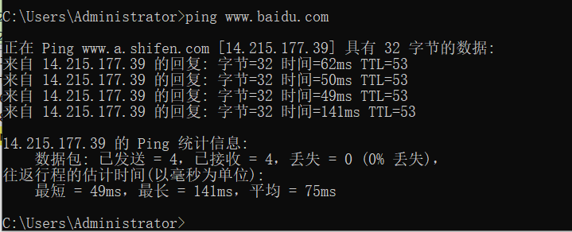
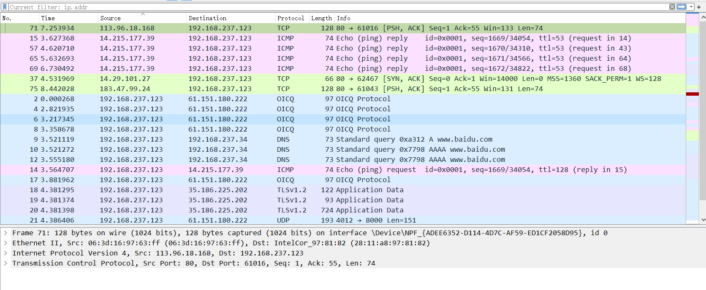
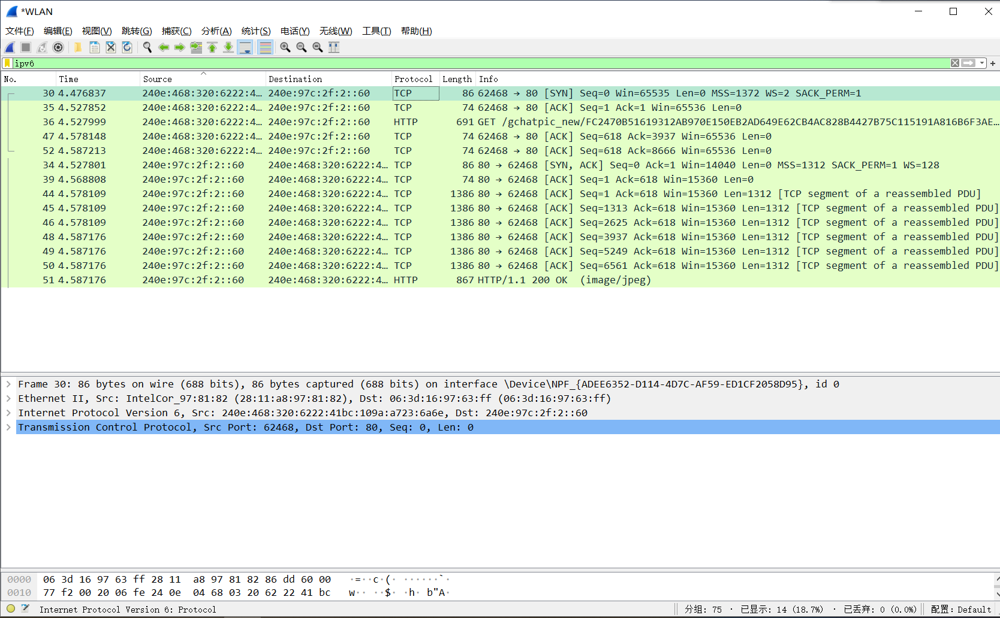
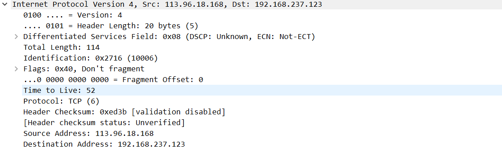
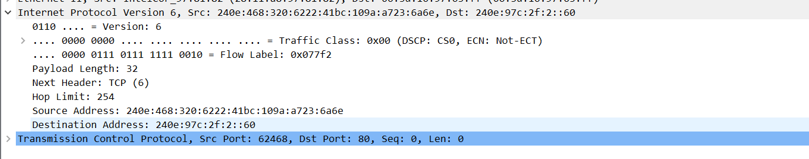

查看网络配置

Ping 百度


同时得到与IPV6和IPV4相关的报文

IPV4协议报文

IPV6协议报文
区别一：IPv6无首部长度字段，长度为固定的40（total-header）字节
区别二：服务类型被取消了
区别三：total长度没了，取而代之的是有效载荷长度字段
区别四：标识Identification，标志Flags，片偏移Fragment Offset都没有了，这些功能都在分片扩展首部中
区别五：TTL没有了，换位了跳数限制字段
区别六：取消了协议字段，改用下一个首部字段
区别七：取消了检验和字段，这样就加快了路由器处理数据报的速度
这一步告诉我们：网络层的差错检测可以精简掉了
区别八：IPV6取消了选项字段改用拓展首部来实现选项功能